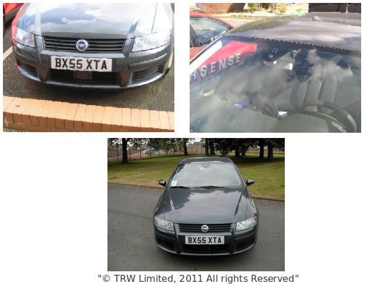

Last update: may 3rd 2017
Project description
In the framework of the european IP Interactive, we are involved in the project Perception which is in charge of designing and developping a common perception framework for multiple safety applications and an unified output interface from the perception layer to the application layer will be developed.
Demonstrator
Fiat-Trw demonstrator

FIGURE 1: Images from the TRW-Conekt demonstrator.
A car demonstrator part of the interactIVe European project is used in order to obtain data sets from different situations. The process of data acquisition focus in three scenarios: highway, countryside, and urban areas. The TRW demonstrator car is a Fiat Stilo previously used in the PReVENT-SASPENCE project. It is equipped with a sensor array composed of the TRW AC100 medium range radar mounted below the registration plate and the TRW TCam camera, positioned below the rear view mirror, providing lane detection and raw image for video processing. Also vehicle ego motion is filtered and provided through the CAN bus. Figure 1 shows images of the interactIVe demonstrator used to perform the experiments.
The radar sensor is medium range radar with a detection range up to 150m, a field of view of 8 degre, and an angular accuracy of 0.5 degre. The camera has on-board processing and image recognition routines embedded, its frame rate is 30Hz.
Experimental results
Some demos: highway, roundabout.
Related papers
- [Chavez16]: O. Chavez, O. Aycard. Multiple Sensor Fusion and Classification for
Moving Object Detection and Tracking. IEEE Transactions on Intelligent Transport Systems, 17(2):525-534, 2016.
- [Chavez14]: O. Chavez, TD. Vu, and O. Aycard. Fusion at detection level for frontal object perception. In Proceedings of the 2014 IEEE
International Conference on Intelligent Vehicles (IV).
- [Dung14]: TD Vu, O. Aycard, and T. Fabio. Object perception for intelligent vehicle applications: A multi-sensor fusion
approach. In Proceedings of the 2014 IEEE International Conference on Intelligent Vehicles (IV).
- [Chavez13]: O. Chavez, TD Vu, O. Aycard, and F. Tango.Fusion framework for moving objects classification. In Proceedings of the 2013 IEEE
International Conference on Information Fusion, 2013.
- [Chavez12]: O. Chavez, J. Burlet, TD. Vu and O. Aycard. Frontal Object Perception using radar and mono-vision. In Proceedings of the 2012 IEEE International Conference on Intelligent Vehicles (IV).